Hobbies
</>
Hiking
Camping
Fossil Collecting and Rockhounding
Photography
Bread Baking
Backyard Poultry
</>
Coding is a big part of my research and I enjoy coding for fun! See my github profile and Projects page!

I have experience with the programming languages Python, javascript, html, MATLAB, Mathematica, C, C++, and cern ROOT. I work primary with Python and I am very familiar with the following packages as I use them frequently in my research: Numpy, Scipy, Keras, Pyroot, Matplotlib, and Pandas.
I also love tinkering with Linux systems and had 2 years experience as a linux system administrator for Telescope Array’s Data Server and Computational Clusters. I used to even host this very website on a Raspberry Pi (Until I thought that was an unwanted cybersecurity risk for my home network)!
Hiking
Living in Boulder Colorado, close to the Front Range or being in close proximity to National Parks in Colorado, Utah, New Mexico, or Wyoming gives me ample opportunity to hike and experience the outdoors.
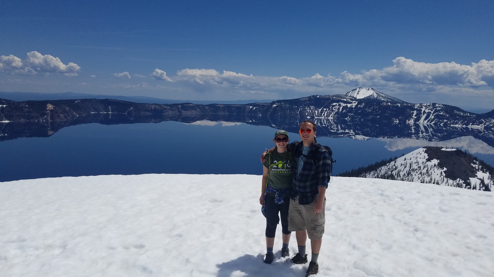

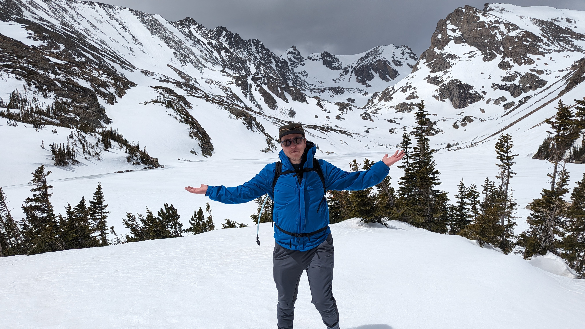
Camping
Living out west, there are many of opportunities for camping outdoors. The west provides options to camp in State Parks, National Parks, and our Public Lands or better yet, finding my own campsite in a National Forest or Federal Land Managed by the Bureau of the Land Management (BLM) where permitted. There is much land out west where one can use for dispersed camp! Please leave no trace!
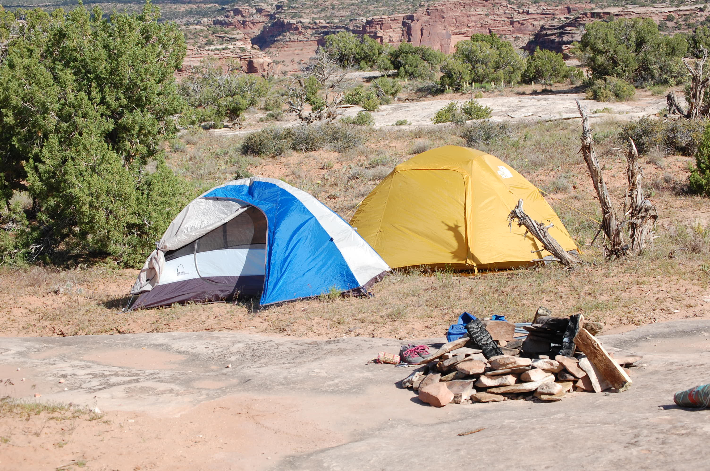
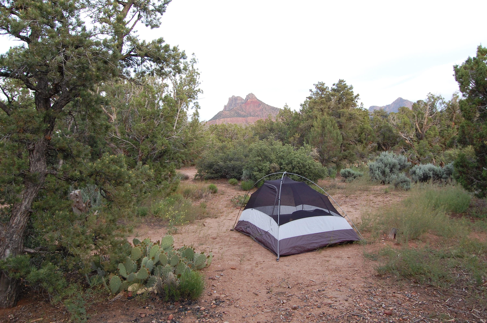
Fossil Collecting and Rockhounding
Utah has plenty of unique fossils and rocks. While working for the Telescope Array Cosmic Ray Observatory, I had plenty of time to explore Millard County, UT looking at the rocks out there. I have traveled to the Dugway Geode Beds, Topaz Mountain, Fossil Mountain, Sunstone Knoll, and more. On public land you may collect rocks and fossils (always check federal, state, and local regulations and make sure you are not on a active register claim!). Good sources for rules in Utah are: BLM Collection Rules and Utah Geological Survey Collecting Rules.


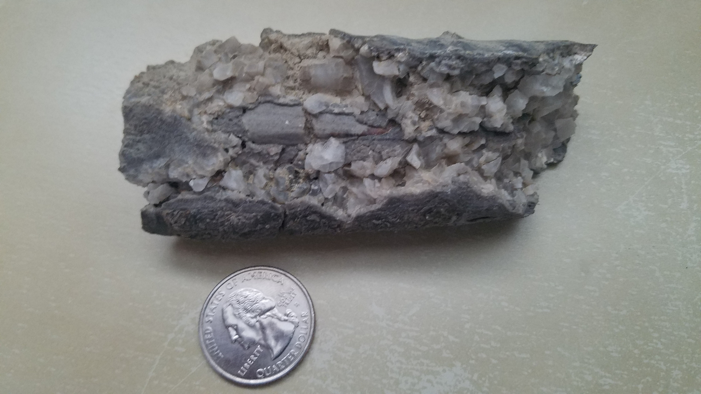
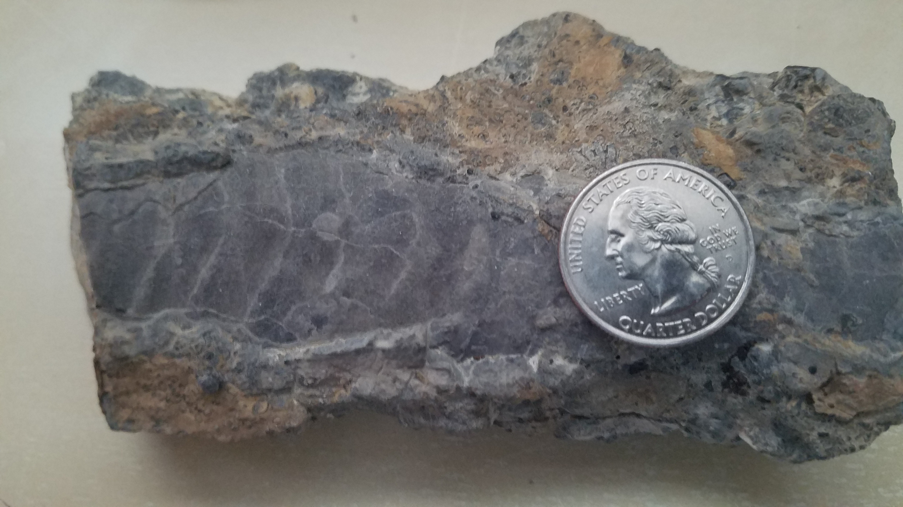

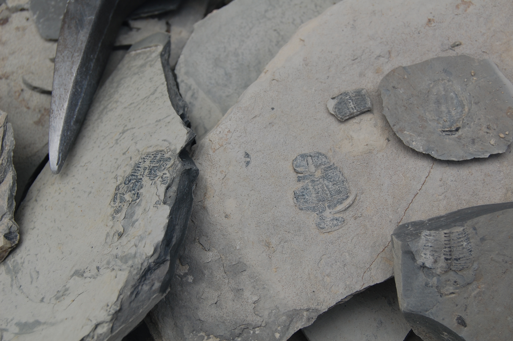
Photography
Spending time in the great outdoors gives lots of inspiration to capturing the amazing views on can being in the right place in time. I enjoy landscape and astrophotography.
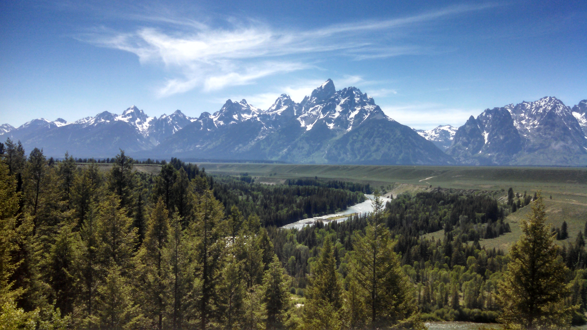
Bread Baking
I have a sourdough starter (named Fest) that I’ve been feeding since graduate school. I enjoy baking bread and find the process very soothing. I am fascinated that I can make bread from an wild yeast! Also the bread also comes out tasty, smells amazing, and beautiful! Check out my Sourdough Bread recipe.
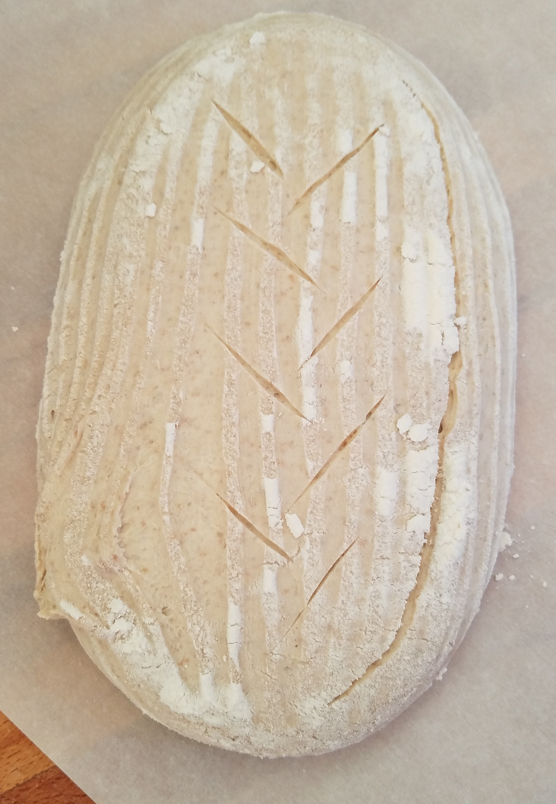
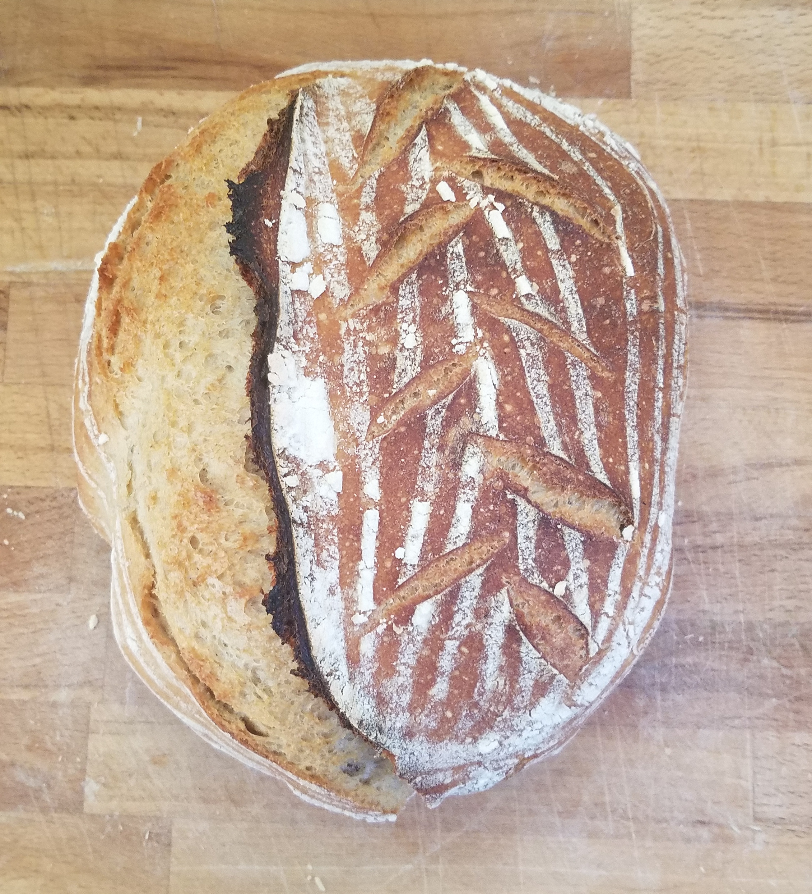
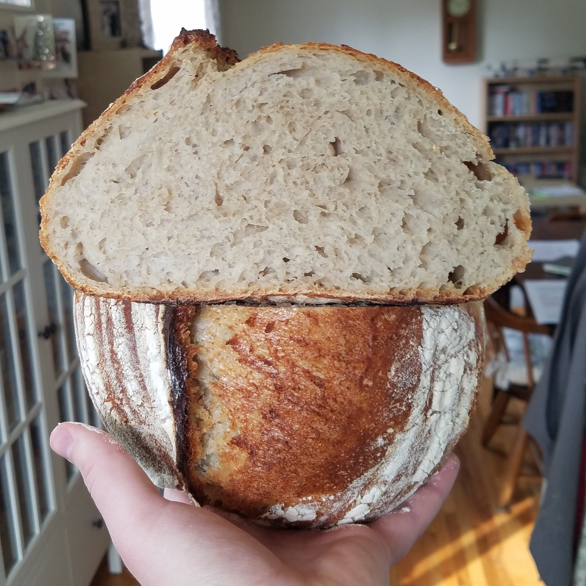
Feeding my sourdough starter has become memorized task after all these yeras. I have thought that I have killed my starter a couple times over the years, but it has become mostly reliable. It does seem less active in the winter months while cooler indoors. I leave mine out on the counter out of direct sunlight.
One of my first jobs was working in a pizza joint. I continue my love of baking pizza with my sourdough baking. Check out my Deep Dish Pizza recipe.
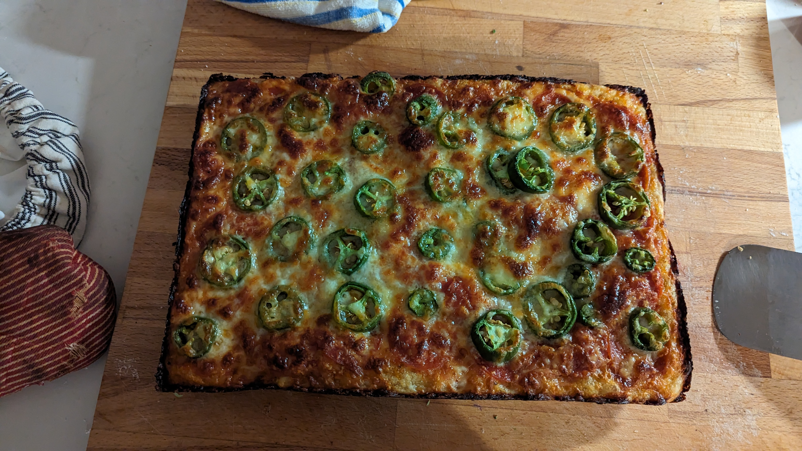
Backyard Poultry
My wife and I have a ‘hobby farm’ for us to attempt to sustainable raise food in a garden and poultry for meat. We have chickens for eggs and raised turkeys for meatbirds. I enjoyed how curious turkeys can be, however it made processing them for Thanksgiving much harder.


Back to Top